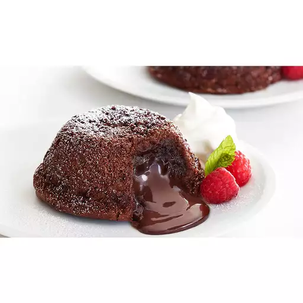

Lava Cake

What is a Lava Cake ?
Molten chocolate cake is a French dessert that consists of a chocolate cake with a liquid chocolate core.
It is named for that molten center, and it is also known as mi-cuit au chocolat, chocolat coulant, chocolate lava cake, or simply lava cake.
The history of chocolate lava cakes is a bit of a mystery.
Chef Jean-Georges Vongerichten claims to have invented it at his restaurant in New York City in the 1980s.
However, fellow New York-based French chef Jacques Torres argues that this dish already existed in France.
Ingredients :
- 2 eggs
- some flour
- 30 gr of sugar
- 56 gr of butter
- 100 gr of chocolate
Steps :
- Preheat the oven to 220°C
- Butter the small bowls with the softened butter and add some flour
and tumble it around. Then tap out the excess flour
- Add 1 full egg and 1 egg yolk
- Add 1/8 cups of sugar to the eggs and whisk until frothy
- Make a Bain-Marie and add half a stick of unsalted butter and 100 gr of chocolate
- While the chocolate is melting, mix until smooth
- Add the chocolate mix to the egg mixture and keep mixing until all is combined
- Add two tsp of flour to the mixture and keep stirring
- Add the batter to the bowls and put them in the oven for 10 to 12 minutes
- Turn the bowl upside down on a plate and add powdered sugar
If completely lost ...
Lava Cake recipe !